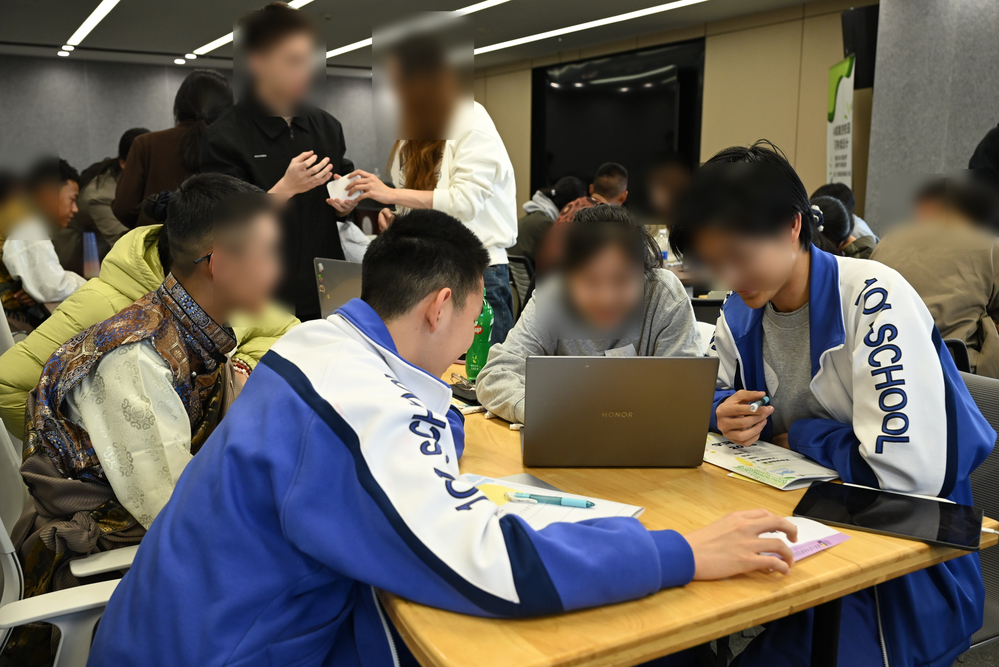
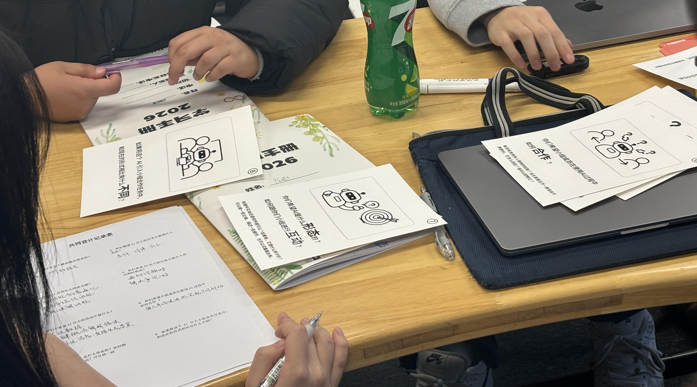

2026 / Work in progress / CSCL
When AI Becomes a Group Resource

LLMs are often imagined as personal tutors or productivity tools for individual learners. But many classrooms are not organized around individual work alone. In collaborative learning, students think together: they negotiate ideas, divide labor, coordinate attention, and decide what counts as the group's answer.
This work-in-progress project asks what happens when AI enters that social process. In a winter camp with high school students from Beijing and Tibet, we worked with groups that brought together students from different educational and technological contexts. Some students had frequent experience with AI tools, presentation software, and laptop-based project work, while others were more familiar with mobile-based search or had less experience using AI for open-ended school tasks. This made the camp a valuable setting for examining how unequal AI literacy shapes collaborative learning.
We designed a short AI-mediated group task followed by a co-design activity. This allowed us to observe how students actually used AI in a time-bounded group setting, and then ask them to reflect on what AI should do in future collaborative learning.

What emerged was not simply a story of AI making students more efficient. AI became a group resource, but not one that everyone could use equally. Device control, prompting skill, confidence, and prior AI experience shaped who could speak through the AI and whose ideas reached the final output. In some groups, one student became the main interface between the group and the model, while students with less AI experience or less confidence in the task stayed at the edge of the process, even when they had ideas to contribute.
This project uses these moments to rethink educational AI for CSCL. If AI is going to support group learning, it should not only help students produce answers faster. It also needs to support participation, shared understanding, and collective responsibility.
My contribution focused on the methodological design of the co-design activity, especially how to move from students' situated AI use to reflection on future AI for collaborative learning. I also conducted reflexive thematic analysis with my co-authors, and we are currently writing this study as a research paper.